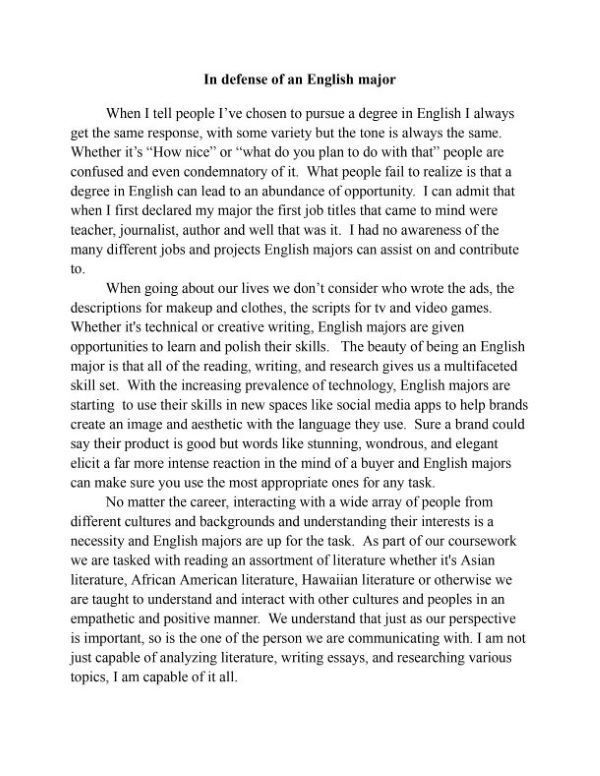
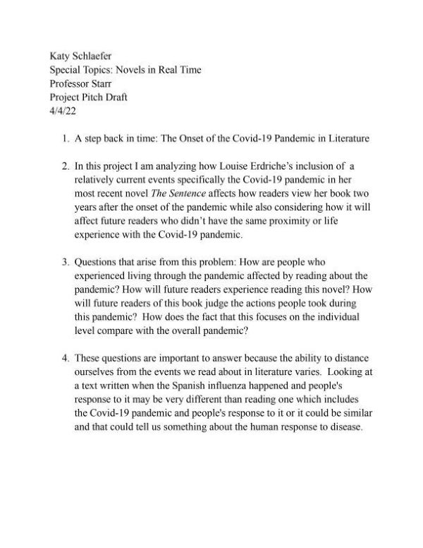
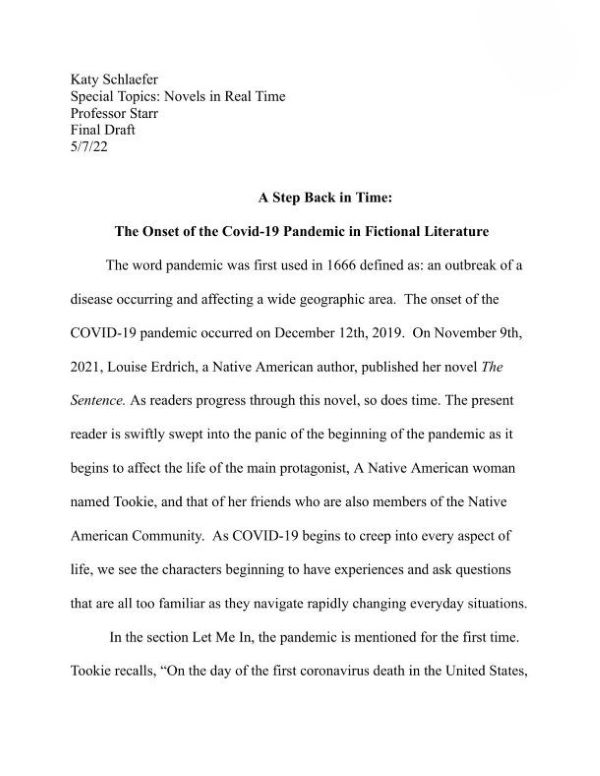
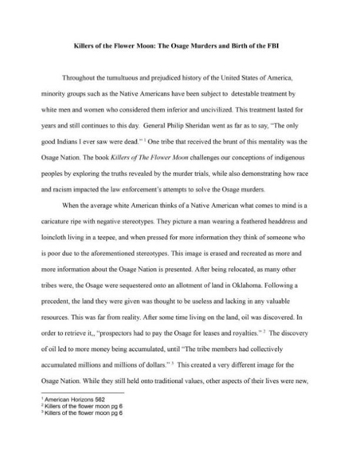

The Inception of the Covid-19 Pandemic in Fictional Literature
This is the final draft of my piece. In it, I write about the feelings people experience when they read literature containg very recent and traumatic events.
PDF 
Killers of The Flower Moon: Murders of The Osage and Birth of the FBI
This is the final draft of my piece. In this piece I write about the novel and how it takes a closer look at the treatment of Native Americans in the United States, more specifically the Osage tribe
PDF